Where does Bd live between hosts?
- The question and the method
- Step 1. Zoospores in water alone
- Step 2. One host species and a pool
- Step 3. Several host species share the pool
- Step 4. Temperature sets how fast Bd makes zoospores
- All steps
- What the exercise shows
- Limits
- References
[!NOTE]
Models in this tutorial
Model Source Category API page Live and dead zoospores, ZoosporePersistenceProblemRumschlag et al. 2022 published api/rumschlag2022.mdSeveral host species sharing one zoospore pool, MultiHostPoolProblemDaversa et al. 2022 published api/daversa2022.mdBd growth in culture, intrinsic_growth_rateWoodhams et al. 2008 published api/thermal.mdGrowth-rate curves of Bsal isolates, IsolateTPCKelly et al. 2024 published api/thermal.mdCategories: published models reimplement a paper’s equations and are checked against it; modified models add structure to a published model; new models are new structure. Results from modified and new models are not published results.
The question and the method
Bd spreads by zoospores, which swim in water for hours before they find a host or die. Every model with a zoospore pool must say how long zoospores last, which hosts feed and drain the pool, and how fast the fungus makes new zoospores. This vignette takes these questions in turn with three published models that measured them directly: zoospores in pond water (Rumschlag et al. 2022), larvae of three species sharing one pool (Daversa et al. 2022), and Bd growing in culture at two temperatures (Woodhams et al. 2008).
At every step it reports the same three outcomes:
- time in the pool: the mean time, in hours, that a free zoospore stays in the pool before it dies, is taken up by a host or (in culture) encysts;
- reproduction number: the number of new infections (or, in culture, new zoospores) that descend from one, with a threshold at 1;
- main host: the host species that contributes most to the reproduction number, and its share.
Where an outcome is not defined for a model, the table shows “–”.
| Step | Model | Piece of biology added |
|---|---|---|
| 1 | Rumschlag et al. (2022) | zoospores in water alone: live and dead, four waters, tadpoles exposed |
| 2 | Daversa et al. (2022), one species | infected hosts shed into a pool that infects other hosts |
| 3 | Daversa et al. (2022), three species | several host species feed and drain one pool |
| 4 | Woodhams et al. (2008) and thermal curves | temperature sets how fast the fungus makes zoospores |
[!IMPORTANT]
The models are reference implementations of the published models, with parameters read from the package’s compendium. Published values quoted for comparison come from the package’s validation registry, with their status (reproduced, qualitative or discrepant). The outcomes of the ladder are our calculations with the published models. The three papers studied different hosts, isolates and temperatures (21 °C, 18 °C, and 10 and 23 °C), so a change between steps mixes the new biology with new parameters.
using Chytridiomycosis, Plots, Printf
using Distributions: median
include("../diagram.jl")
default(linewidth = 2, size = (720, 380), legendfontsize = 8, guidefontsize = 9,
titlefontsize = 10, left_margin = 4Plots.mm, bottom_margin = 4Plots.mm)
ladder = NamedTuple[]
function step!(n, model, hours, R, host, share, note)
push!(ladder, (; n, model, hours, R, host, share, note))
return (time_in_pool_h = round(hours, digits = 2), reproduction_number = round(R, digits = 3),
main_host = host, share = round(share, digits = 3))
end
function registry(id)
t = validation_target(id)
return (; published = t.published, status = t.status,
ours = t.regression === nothing ? nothing : t.regression["value"])
end
waters = (:ASW, :TroutCreek, :Flatwoods, :GreenSwamp)
wcol = Dict(:ASW => :steelblue, :TroutCreek => :seagreen, :Flatwoods => :darkorange,
:GreenSwamp => :firebrick)
nothingStep 1. Zoospores in water alone
Rumschlag et al. (2022) added Bd zoospores to artificial spring water (ASW) and to unfiltered water from three Florida ponds at 21 °C. They counted live and dead zoospores by staining over two days, and exposed Cuban treefrog tadpoles for one day at increasing lags after the zoospores were added. Live zoospores $Z_L$ die at rate $m$, dead ones $Z_D$ decompose at rate $d$, and susceptible tadpoles $S$ are infected by live zoospores (time in days):
\[\frac{dZ_L}{dt} = -m Z_L, \qquad \frac{dZ_D}{dt} = m Z_L - d Z_D, \qquad \frac{dS}{dt} = -\beta S Z_L, \qquad \frac{dI}{dt} = \beta S Z_L.\]
A tadpole added at lag $t_1$ and removed one day later is infected with probability $p = 1 - \exp\!\big(\beta Z_L(0) e^{-m t_1}(e^{-m} - 1)/m\big)$. The paper reports the lifespan $24/m$ and the persistence time $24/d$ in hours.
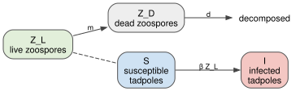
The compendium holds the paper’s selected model: a lifespan for each water, one persistence time and one β.
rp = Dict(w => RumschlagParameters(:rumschlag2022; water = w) for w in waters)
for w in waters
@printf("- %s: lifespan %.1f h, persistence %.1f h, infection probability at lag 0 %.3f\n",
w, zoospore_lifespan(rp[w]), persistence_time(rp[w]), infection_probability(rp[w], 1e5, 0.0))
end- ASW: lifespan 14.4 h, persistence 21.6 h, infection probability at lag 0 0.292
- TroutCreek: lifespan 13.3 h, persistence 21.6 h, infection probability at lag 0 0.280
- Flatwoods: lifespan 11.4 h, persistence 21.6 h, infection probability at lag 0 0.256
- GreenSwamp: lifespan 9.4 h, persistence 21.6 h, infection probability at lag 0 0.226
Zoospores live 14.4 h in artificial spring water and 9.4 h in unfiltered Green Swamp water; persistence after death is shared by all four waters. The deposited data are bundled with the package, and a refit of the selected model takes a few seconds:
data = load_rumschlag2022()
fit = maximum_likelihood(RumschlagModel(); starts = 2)
summ = rumschlag_summary(fit)
nothingfor (id, v) in (("rumschlag2022_lifespan", summ.lifespan.ASW[1]),
("rumschlag2022_lifespan_GreenSwamp", summ.lifespan.GreenSwamp[1]),
("rumschlag2022_persistence", summ.persistence.ASW[1]),
("rumschlag2022_beta", summ.β.ASW[1]))
g = registry(id)
@printf("- `%s`: paper %g, our refit %.4g (%s).\n", id, g.published, v, g.status)
end
@printf("- fitted initial live zoospores: %.1f per µl.\n", fit.estimates.ZL0)rumschlag2022_lifespan: paper 14.4, our refit 14.43 (reproduced).rumschlag2022_lifespan_GreenSwamp: paper 9.4, our refit 9.377 (reproduced).rumschlag2022_persistence: paper 21.6, our refit 21.56 (reproduced).rumschlag2022_beta: paper 7.1e-06, our refit 7.101e-06 (reproduced).- fitted initial live zoospores: 142.8 per µl.
The fitted model against the counts, for the longest- and shortest-lived waters. A qPCR or eDNA assay detects the DNA of live and dead zoospores alike, so it would see $Z_L + Z_D$:
plot(layout = (1, 2), size = (860, 330))
for (i, w) in enumerate((:ASW, :GreenSwamp))
q = rumschlag_parameters(fit.model, fit.x, w)
sol = solve(ZoosporePersistenceProblem(q; ZL0 = fit.estimates.ZL0, tspan = (0.0, 2.5)); saveat = 0.02)
ZL, ZD = getindex.(sol.u, 1), getindex.(sol.u, 2)
obs = filter(c -> c.water == w, data.survival)
scatter!([c.t * 24 for c in obs], [c.live for c in obs]; subplot = i, color = :seagreen,
ms = 3, alpha = 0.6, label = "live (counted)")
scatter!([c.t * 24 for c in obs], [c.dead for c in obs]; subplot = i, color = :gray50,
ms = 3, alpha = 0.6, label = "dead (counted)")
plot!(sol.t .* 24, ZL; subplot = i, color = :seagreen, label = "live, model")
plot!(sol.t .* 24, ZD; subplot = i, color = :gray50, label = "dead, model")
plot!(sol.t .* 24, ZL .+ ZD; subplot = i, color = :black, linestyle = :dash,
label = "live + dead (what qPCR sees)", title = string(w), xlabel = "hours",
ylabel = "zoospores per µl")
end
plot!()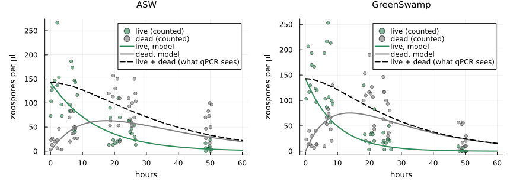
viable(w, t) = (q = rp[w]; s = solve(ZoosporePersistenceProblem(q; ZL0 = 1.0, tspan = (0.0, t)));
s.u[end][1] / (s.u[end][1] + s.u[end][2]))
for w in waters
@printf("%-11s live fraction of the DNA-detectable zoospores after 24 h: %.2f, after 48 h: %.2f\n",
w, viable(w, 1.0), viable(w, 2.0))
endASW live fraction of the DNA-detectable zoospores after 24 h: 0.31, after 48 h: 0.14
TroutCreek live fraction of the DNA-detectable zoospores after 24 h: 0.28, after 48 h: 0.11
Flatwoods live fraction of the DNA-detectable zoospores after 24 h: 0.22, after 48 h: 0.07
GreenSwamp live fraction of the DNA-detectable zoospores after 24 h: 0.15, after 48 h: 0.03A day after a release, only 31% of the zoospores a DNA count detects in ASW are alive, and 15% in Green Swamp water: the count overstates the infectious pool about threefold in ASW and nearly sevenfold in the pond where zoospores die fastest. The package’s ZoosporePool puts these two compartments into other models, with shedding and uptake terms; that pool is a modified model (the assays had neither), and is not used here.
What infects is the live pool. The chance that a tadpole is infected falls with the lag between the release and the tadpole’s arrival, faster where zoospores die faster. The scale of the printed β is not stated in the paper; the package pairs it with $Z_L(0) = 10^5$, an inferred convention that reproduces the paper’s Fig. 4:
lags = 0:0.05:2
plot(xlabel = "lag before the tadpole is added (days)", ylabel = "probability of infection")
for w in waters
plot!(lags, [infection_probability(rp[w], 1e5, t) for t in lags]; color = wcol[w], label = string(w))
end
r = registry("rumschlag2022_fig4a_ASW")
@printf("ASW at lag 0: ours %.3f, paper %s (%s)\n", infection_probability(rp[:ASW], 1e5, 0.0), r.published, r.status)
plot!()ASW at lag 0: ours 0.292, paper about 0.29 (read from the figure) (qualitative)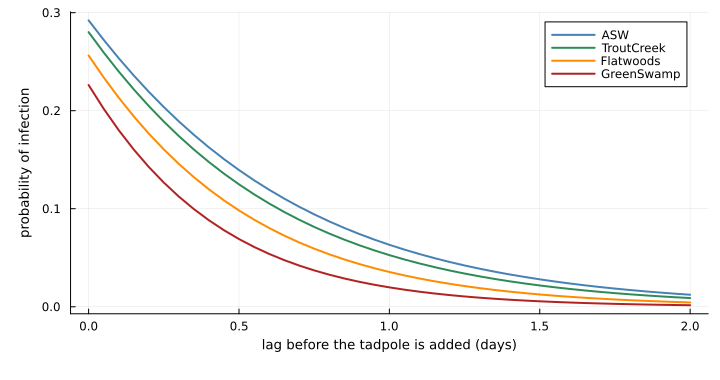
Transmission per live zoospore is the same in every water (one β was selected); the waters differ only in how long zoospores live. With no infected host shedding into the water, there is no reproduction number and no host that drives transmission:
step!(1, "zoospores in ASW (Rumschlag 2022)", zoospore_lifespan(rp[:ASW]), NaN, "–", NaN,
"infection risk 0.29 at once, 0.06 a day later")
step!(1, "zoospores in Green Swamp water (Rumschlag 2022)", zoospore_lifespan(rp[:GreenSwamp]),
NaN, "–", NaN, "zoospores die 1.5 times faster than in ASW")(time_in_pool_h = 9.4, reproduction_number = NaN, main_host = "–", share = NaN)Step 2. One host species and a pool
Daversa et al. (2022) kept larvae of fire salamanders, spiny toads and Iberian tree frogs in 80 L mesocosms at 18 °C, alone or together, and inoculated Bd. Their model has hosts $H_i$ of species $i$, infected hosts $I_i$ and zoospores $Z$ in the tank (numbers per tank, days):
\[\frac{dH_i}{dt} = -\mu_i H_i, \qquad \frac{dI_i}{dt} = \beta_i (H_i - I_i) Z - (\mu_i + \sigma_i) I_i, \qquad \frac{dZ}{dt} = \sum_k \lambda_k I_k + \Phi(t) - Z\Big(\gamma + \sum_k \beta_k H_k\Big).\]
Hosts leave at rate $\mu_i$ (death and metamorphosis), recover at rate $\sigma_i$ and shed $\lambda_i$ zoospores a day. Zoospores die at rate $\gamma$ and are taken up by hosts at rate $\beta_k$ each. $\Phi(t)$ are the inoculations. With one species the reproduction number is
\[R_0 = \frac{\beta \lambda H}{(\mu + \sigma)(\gamma + \beta H)},\]
the zoospores shed over one infection, times the chance that a zoospore infects before it is lost. Start with tree frogs alone: 24 larvae, about the number per tank in the experiment.
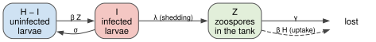
The β, λ and σ of the compendium are posterior medians digitised from the paper’s Fig. 4a, because the paper prints no numbers. Host loss rates vary by tank; as in the authors’ code, a species’ loss rate is its mean over all 36 tanks.
dp = DaversaParameters(:daversa2022)
tanks = load_daversa2022()
μbar = [sum(t.μ[i] for t in tanks) / length(tanks) for i in 1:3]
sub(p, k) = DaversaParameters(; species = p.species[k], β = p.β[k], λ = p.λ[k], σ = p.σ[k], γ = p.γ)
frogs = sub(dp, [3])
R0f = basic_reproduction_number(frogs, [24.0]; μ = μbar[[3]])
hours_f = 24 / (frogs.γ + frogs.β[1] * 24)
@printf("24 frog larvae: R0 = %.2f; zoospores spend %.2f h in the pool; hosts take up a fraction %.1e of them\n",
R0f, hours_f, frogs.β[1] * 24 / (frogs.γ + frogs.β[1] * 24))24 frog larvae: R0 = 4.35; zoospores spend 24.00 h in the pool; hosts take up a fraction 7.6e-06 of themAn infected frog larva sheds enough to infect more than four others, but a zoospore is far more likely to die than to meet a host: in 80 L, hosts take up about eight in a million zoospores. The tank’s pool is therefore set almost entirely by zoospore death, $\gamma = 1$ day⁻¹, which the authors took from Longcore et al. (1999), not from their data. A run with the authors’ inoculation schedule:
dose = daversa_doses()
solf = solve(MultiHostPoolProblem(frogs, [24.0]; Z0 = dose.Z0, doses = dose.doses,
μ = μbar[[3]], tspan = (0.0, 40.0)); saveat = 0.1)
plot(layout = (1, 2), size = (860, 320))
plot!(solf.t, getindex.(solf.u, 2) ./ getindex.(solf.u, 1); subplot = 1, color = :firebrick,
label = "", xlabel = "day", ylabel = "prevalence", title = "infected frog larvae")
plot!(solf.t, log10.(getindex.(solf.u, 3) .+ 1); subplot = 2, color = :seagreen, label = "",
xlabel = "day", ylabel = "log₁₀ zoospores in the tank", title = "zoospore pool")
prev = getindex.(solf.u, 2) ./ getindex.(solf.u, 1)
@printf("prevalence on day 7: %.2f; zoospores shed per day on day 7 / first inoculation: %.1f\n",
prev[71], frogs.λ[1] * solf.u[71][2] / dose.Z0)
plot!()prevalence on day 7: 0.76; zoospores shed per day on day 7 / first inoculation: 4.2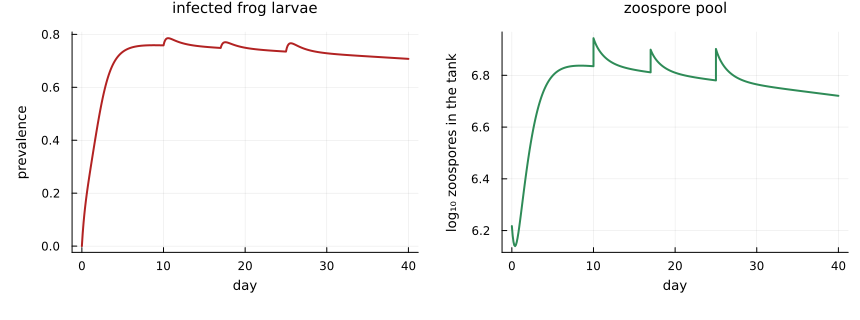
Within a week three quarters of the larvae are infected, and from then on shedding, not the inoculations, keeps the pool full. Because $R_0$ is nearly proportional to the zoospore lifespan $1/\gamma$, the waters of step 1 matter. Putting Rumschlag’s death rates in place of $\gamma$ combines two published models at different temperatures; it is our what-if, not a published result:
for w in waters
pw = DaversaParameters(; species = frogs.species, β = frogs.β, λ = frogs.λ, σ = frogs.σ, γ = rp[w].m)
@printf("- %s (lifespan %.1f h): R0 of 24 frog larvae %.2f\n", w, zoospore_lifespan(rp[w]),
basic_reproduction_number(pw, [24.0]; μ = μbar[[3]]))
end- ASW (lifespan 14.4 h): R0 of 24 frog larvae 2.61
- TroutCreek (lifespan 13.3 h): R0 of 24 frog larvae 2.41
- Flatwoods (lifespan 11.4 h): R0 of 24 frog larvae 2.06
- GreenSwamp (lifespan 9.4 h): R0 of 24 frog larvae 1.70
step!(2, "24 tree frog larvae (Daversa 2022)", hours_f, R0f, "frog", 1.0,
"hosts take up about 8 in a million zoospores")(time_in_pool_h = 24.0, reproduction_number = 4.347, main_host = "frog", share = 1.0)Step 3. Several host species share the pool
With three species, each species’ contribution is
\[R_{0,i} = \frac{\beta_i \lambda_i H_i}{(\mu_i + \sigma_i)\big(\gamma + \sum_k \beta_k H_k\big)}, \qquad R_{0,\mathrm{TOT}} = \sum_i R_{0,i}.\]
All transmission passes through one pool, so the host-to-host next-generation matrix has rank one and its spectral radius equals the sum. The package checks this numerically from the right-hand side:
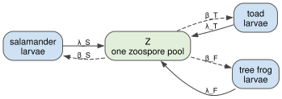
H8 = [8.0, 8.0, 8.0]
contrib = species_reproduction_numbers(dp, H8; μ = μbar)
ngm = next_generation_matrix(dp, H8; μ = μbar)
@printf("8 of each: R0_S = %.3f, R0_T = %.3f, R0_F = %.3f; sum %.3f; spectral radius of the NGM %.3f\n",
contrib..., sum(contrib), ngm.R0)8 of each: R0_S = 0.084, R0_T = 0.358, R0_F = 1.449; sum 1.891; spectral radius of the NGM 1.891The salamander adds little: its β is about a quarter of the anurans’ (the text says about 80% lower; daversa2022_rate_ratios, qualitative), and frogs shed about four times as much as the others. What happens when a species is added depends on whether it is added to the hosts already there or replaces some of them:
R(H) = basic_reproduction_number(dp, H; μ = μbar)
additive = [R([0.0, 0, 8]), R([0.0, 8, 8]), R([8.0, 8, 8])]
@printf("additive: 8 frogs %.3f; + 8 toads %.3f; + 8 salamanders %.3f\n", additive...)
nS = 0:24
subst = [R([s, (24 - s) / 2, (24 - s) / 2]) for s in nS]
plot(nS, subst; color = :black, marker = :circle, ms = 3, label = "24 larvae: salamanders replace toads and frogs",
xlabel = "salamander larvae in the tank", ylabel = "R0_TOT")
hline!([1.0]; color = :gray, linestyle = :dash, label = "")
@printf("24 larvae: no salamanders %.2f, 12 salamanders %.2f, 24 salamanders %.2f\n", subst[1], subst[13], subst[end])
plot!()additive: 8 frogs 1.449; + 8 toads 1.807; + 8 salamanders 1.891
24 larvae: no salamanders 2.71, 12 salamanders 1.48, 24 salamanders 0.25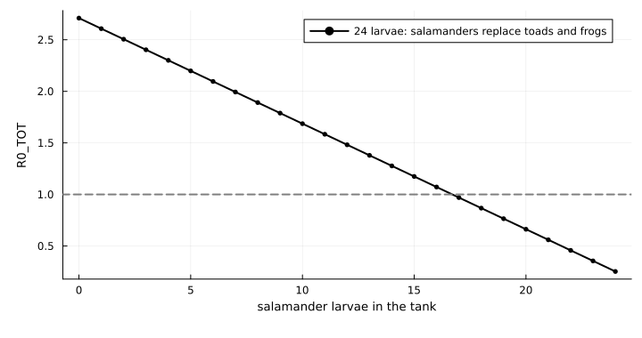
Replacing all toads and frogs by salamanders takes R₀ from well above 1 to well below it. Added to a tank, a species only adds its own contribution, because hosts take up so few zoospores that they barely compete for them. Swapped in for better hosts, the salamander dilutes transmission. The experiment varied the mix of species, and over the 21 three-species tanks the paper reports that $R_{0,\mathrm{TOT}}$ falls as salamanders make up more of the tank:
t3 = load_daversa2022(; three_species_only = true)
Rt = tank_reproduction_numbers(dp, t3)
for (id, v) in (("daversa2022_R0_salamander", median(getindex.(Rt, 1))),
("daversa2022_R0_toad", median(getindex.(Rt, 2))), ("daversa2022_R0_frog", median(getindex.(Rt, 3))))
g = registry(id)
@printf("- `%s`: paper %g, ours %.3f (%s).\n", id, g.published, v, g.status)
end
for id in ("daversa2022_multihost", "daversa2022_salamander_negligible", "daversa2022_frog_toad_ratio")
g = registry(id)
@printf("- `%s`: paper \"%s\"; ours %.3f (%s).\n", id, g.published, g.ours, g.status)
enddaversa2022_R0_salamander: paper 0.143, ours 0.130 (reproduced).daversa2022_R0_toad: paper 0.247, ours 0.268 (reproduced).daversa2022_R0_frog: paper 0.911, ours 0.906 (reproduced).daversa2022_multihost: paper “strong negative correlation”; ours -0.699 (qualitative).daversa2022_salamander_negligible: paper “salamanders contribute very little to the R0 of Bd in each tank”; ours 0.228 (qualitative).daversa2022_frog_toad_ratio: paper “little consequence for R0_TOT (\|r\| \< 0.3 taken as negligible)”; ours 0.449 (discrepant).
The frog:toad ratio is the discrepant one: the paper calls its effect small, but at the median parameters a frog contributes about four times as much as a toad, and both the paper’s own digitised medians and ours correlate with that ratio.
The fitted model predicts the numbers infected at the end of the experiment:
obs = reduce(vcat, observed_infected.(t3))
pred = reduce(vcat, [predicted_infected(dp, t) for t in t3])
ok = .!isnan.(obs)
rfit = sum((obs[ok] .- sum(obs[ok]) / count(ok)) .* (pred[ok] .- sum(pred[ok]) / count(ok))) /
sqrt(sum(abs2, obs[ok] .- sum(obs[ok]) / count(ok)) * sum(abs2, pred[ok] .- sum(pred[ok]) / count(ok)))
r = registry("daversa2022_fit_r")
sp = repeat([:salamander, :toad, :frog], length(t3))
scatter(pred[ok], obs[ok]; group = sp[ok], ms = 4, xlabel = "predicted infected at the end",
ylabel = "observed infected", title = @sprintf("r = %.2f (paper %.2f, %s)", rfit, r.published, r.status))
@printf("observed against predicted, 63 points: r = %.3f\n", rfit)
plot!([0, 10], [0, 10]; color = :gray, linestyle = :dash, label = "")observed against predicted, 63 points: r = 0.710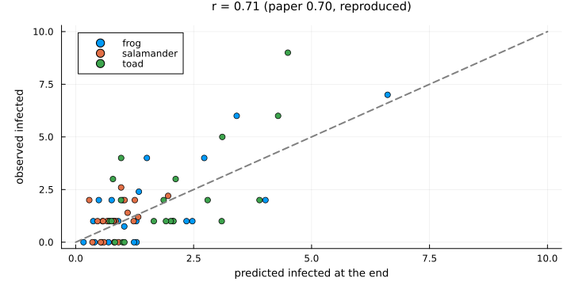
The R₀ formula printed on p. 6 has $\mu_i$ alone in its denominator, dropping recovery. The authors’ code and the next-generation matrix use $\mu_i + \sigma_i$; only that reproduces Fig. 4b. The package keeps the printed form behind as_printed = true. With each tank’s own loss rates it overstates R₀ about thirtyfold, and is infinite for a species that lost no hosts:
printed = tank_reproduction_numbers(dp, t3; μ = :tank, as_printed = true)
r = registry("daversa2022_printed_R0")
@printf("median salamander R0 as printed: %.2f (corrected, paper's Fig. 4b: %g; %s); tanks with an infinite value: %d\n",
median(getindex.(printed, 1)), r.published, r.status, count(x -> any(isinf, x), printed))median salamander R0 as printed: 4.26 (corrected, paper's Fig. 4b: 0.143; discrepant); tanks with an infinite value: 20For the ladder, the medians over the 21 tanks:
Rtot = sum.(Rt)
shareF = median(getindex.(Rt, 3) ./ Rtot)
step!(3, "three species, 21 mesocosm tanks (Daversa 2022)", median(24 ./ [dp.γ + sum(dp.β .* t.H0) for t in t3]),
median(Rtot), "frog", shareF, "salamanders dilute only when they replace anurans")(time_in_pool_h = 24.0, reproduction_number = 1.319, main_host = "frog", share = 0.722)Step 4. Temperature sets how fast Bd makes zoospores
The pool is filled by the fungus growing on hosts, and that growth depends on temperature. Woodhams et al. (2008) grew Bd in culture at several temperatures. A free zoospore encysts at rate $m_Z$ or dies at rate $d_Z$; an encysted zoospore matures into a sporangium that, after $s$ hours, releases $F$ zoospores. The long-term growth rate $\lambda$ (h⁻¹) of the culture is the root of their characteristic equation
\[F m_Z e^{-\lambda s} = \lambda + m_Z + d_Z .\]
Setting $\lambda = 0$ gives the threshold: the culture grows when $R = F m_Z/(m_Z + d_Z) > 1$, the zoospores produced per free zoospore (our calculation, not reported in the paper).
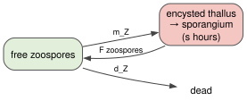
wp = Dict(set => WoodhamsParameters(:woodhams2008; set) for set in ("10C", "23C"))
for set in ("10C", "23C")
w = wp[set]
λ = intrinsic_growth_rate(w)
g = registry("woodhams2008_lambda_" * set)
@printf("%s: F = %.1f, s = %.1f h; free zoospores last %.1f h; R = %.0f; λ = %.4f h⁻¹ (paper %g, %s); doubling time %.0f h\n",
set, w.F, w.s, 1 / (w.mZ + w.dZ), w.F * w.mZ / (w.mZ + w.dZ), λ, g.published, g.status, log(2) / λ)
end10C: F = 160.5, s = 222.7 h; free zoospores last 23.3 h; R = 149; λ = 0.0207 h⁻¹ (paper 0.021, reproduced); doubling time 33 h
23C: F = 64.8, s = 87.7 h; free zoospores last 5.2 h; R = 59; λ = 0.0442 h⁻¹ (paper 0.044, reproduced); doubling time 16 hThe cold culture makes more than twice as many zoospores per zoospore, and its zoospores last more than four times as long, yet it grows at half the rate: each generation takes two and a half times as long. Woodhams et al. read this as a life-history trade-off that lets Bd persist in the cold. The zoospore rates were also measured at four temperatures (their Table 1). Interpolated linearly with an InterpolatedTPC, they give the time a free zoospore lasts across the range:
Tm, mZ = thermal_data(:woodhams2008, :mZ; set_prefix = "table1")
_, dZ = thermal_data(:woodhams2008, :dZ; set_prefix = "table1")
life = InterpolatedTPC(Tm, 1 ./ (mZ .+ dZ))
Tgrid = 4:0.5:28
plot(Tgrid, life.(Tgrid); color = :seagreen, xlabel = "temperature (°C)",
ylabel = "hours as a free zoospore", label = "Woodhams et al. (2008), Table 1, interpolated")
scatter!(Tm, 1 ./ (mZ .+ dZ); color = :seagreen, label = "")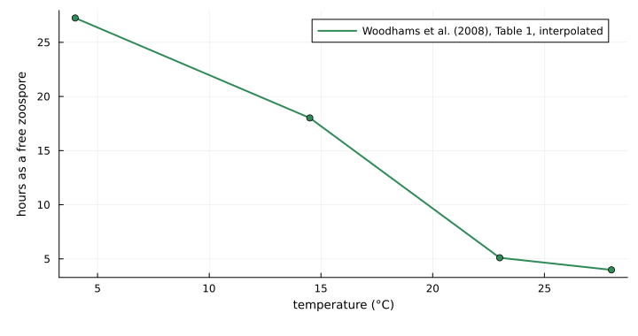
Bd has no fitted growth curve in the compendium. For its sister species B. salamandrivorans, Kelly et al. (2024) fitted a polynomial to the growth rate of each of 13 isolates (PolynomialTPC, one of the package’s curve families with Briere, CardinalTPC, GaussianQuadratic, SharpeSchoolfield and Ratkowsky). They show how much isolates of one pathogen can differ:
isolates = ["BundBos2013", "BundBos2018", "Captive2015-1", "Captive2015-2", "Captive2015-3",
"Catalan2018", "Eifel2019", "Essen2019", "Luik2014", "Luik2017", "Olne2020", "Rob2014", "Rob2015"]
Tk = 0:0.25:30
plot(xlabel = "temperature (°C)", ylabel = "growth rate r (day⁻¹)", legend = :outerright, size = (760, 380))
for iso in isolates
c = IsolateTPC(:kelly2024, iso)
plot!(Tk, c.(Tk); label = iso, linewidth = iso in ("Eifel2019", "Luik2017") ? 3 : 1)
end
plot!()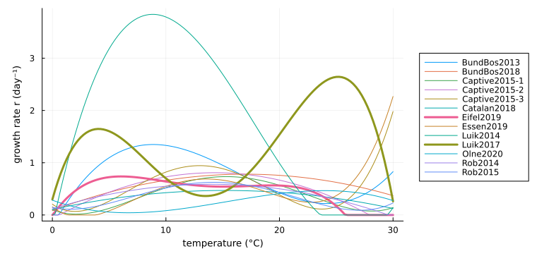
for (id, iso) in (("kelly2024_Topt_Eifel2019", "Eifel2019"), ("kelly2024_Topt_Luik2017", "Luik2017"))
g = registry(id)
@printf("- `%s`: paper %g °C, ours %.2f °C (%s).\n", id, g.published,
thermal_optimum(IsolateTPC(:kelly2024, iso).curve; range = (0.0, 30.0)), g.status)
endkelly2024_Topt_Eifel2019: paper 6 °C, ours 6.05 °C (reproduced).kelly2024_Topt_Luik2017: paper 24 °C, ours 25.17 °C (discrepant).
The Luik2017 quartic peaks at about 25 °C, not at the 24 °C the paper reports, and its fit is weak (R² = 0.17).
To see how a seasonal pond would change Bd’s growth, interpolate each of Woodhams’ four parameters linearly between 10 and 23 °C, and drive the temperature with a SeasonalTemperature that stays in that range (a mean of 16.5 °C and an amplitude of 6.5 °C, warmest on day 200). Both the interpolation and the season are illustrative choices of ours; Woodhams et al. measured $F$ and $s$ at two temperatures only.
par(sym) = InterpolatedTPC([10.0, 23.0], [getfield(wp["10C"], sym), getfield(wp["23C"], sym)])
curves = (F = par(:F), s = par(:s), dZ = par(:dZ), mZ = par(:mZ))
λT(T) = intrinsic_growth_rate(WoodhamsParameters(; F = curves.F(T), s = curves.s(T),
dZ = curves.dZ(T), mZ = curves.mZ(T)))
season = SeasonalTemperature(; mean = 16.5, amplitude = 6.5, peak = 200.0)
λt = temperature_dependent(λT, season)
days = 0:2:365
plot(layout = (1, 2), size = (860, 320))
plot!(days, season.(days); subplot = 1, color = :black, label = "", xlabel = "day of year",
ylabel = "temperature (°C)")
plot!(days, log(2) ./ λt.(days); subplot = 2, color = :firebrick, label = "", xlabel = "day of year",
ylabel = "doubling time of Bd in culture (h)")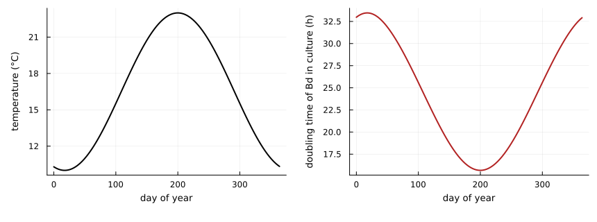
step!(4, "Bd in culture at 10 °C (Woodhams 2008)", 1 / (wp["10C"].mZ + wp["10C"].dZ),
wp["10C"].F * wp["10C"].mZ / (wp["10C"].mZ + wp["10C"].dZ), "–", NaN,
@sprintf("λ = %.3f h⁻¹", intrinsic_growth_rate(wp["10C"])))
step!(4, "Bd in culture at 23 °C (Woodhams 2008)", 1 / (wp["23C"].mZ + wp["23C"].dZ),
wp["23C"].F * wp["23C"].mZ / (wp["23C"].mZ + wp["23C"].dZ), "–", NaN,
@sprintf("λ = %.3f h⁻¹", intrinsic_growth_rate(wp["23C"])))(time_in_pool_h = 5.15, reproduction_number = 59.425, main_host = "–", share = NaN)In culture there is no host, so the reproduction number counts zoospores per zoospore, not infections per infection, and there is no main host.
All steps
fmt(x) = isnan(x) ? "–" : @sprintf("%.3g", x)
println("| Step | Model | Time in the pool (h) | Reproduction number | Main host (share) | Note |")
println("|---|---|---|---|---|---|")
for r in ladder
host = r.host == "–" ? "–" : @sprintf("%s (%.2f)", r.host, r.share)
println("| ", r.n, " | ", r.model, " | ", fmt(r.hours), " | ", fmt(r.R), " | ", host, " | ", r.note, " |")
end| Step | Model | Time in the pool (h) | Reproduction number | Main host (share) | Note |
|---|---|---|---|---|---|
| 1 | zoospores in ASW (Rumschlag 2022) | 14.4 | – | – | infection risk 0.29 at once, 0.06 a day later |
| 1 | zoospores in Green Swamp water (Rumschlag 2022) | 9.4 | – | – | zoospores die 1.5 times faster than in ASW |
| 2 | 24 tree frog larvae (Daversa 2022) | 24 | 4.35 | frog (1.00) | hosts take up about 8 in a million zoospores |
| 3 | three species, 21 mesocosm tanks (Daversa 2022) | 24 | 1.32 | frog (0.72) | salamanders dilute only when they replace anurans |
| 4 | Bd in culture at 10 °C (Woodhams 2008) | 23.3 | 149 | – | λ = 0.021 h⁻¹ |
| 4 | Bd in culture at 23 °C (Woodhams 2008) | 5.15 | 59.4 | – | λ = 0.044 h⁻¹ |
k = length(ladder)
plot(layout = (1, 2), size = (900, 340))
bar!([r.hours for r in ladder]; subplot = 1, xticks = (1:k, string.(1:k)), legend = false,
ylabel = "time in the pool (h)", xlabel = "row of the table", color = :seagreen)
hostrows = findall(r -> r.host != "–", ladder)
bar!(hostrows, [ladder[i].R for i in hostrows]; subplot = 2, xticks = (1:k, string.(1:k)),
xlims = (0.5, k + 0.5), legend = false, ylabel = "R₀ (infections per infection)",
xlabel = "row of the table", color = :firebrick)
hline!([1.0]; subplot = 2, color = :gray, linestyle = :dash)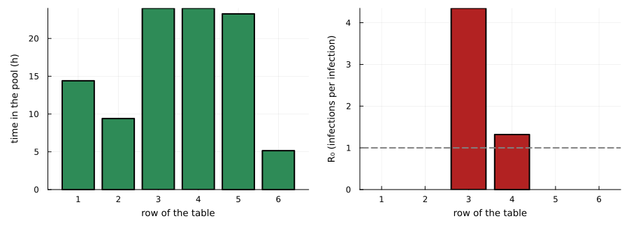
The reproduction numbers of the culture rows are zoospores per zoospore and are left out of the right-hand panel.
What the exercise shows
- Zoospores last hours, and the water decides how many. Live zoospores last 9 to 14 hours in the four waters of Rumschlag et al., and a tadpole’s risk of infection falls by a factor of five (ASW) to eleven (Green Swamp) within a day. Transmission per live zoospore did not differ between waters; persistence did.
- DNA is not infectiousness. Dead zoospores keep their DNA for most of a day, so a qPCR or eDNA count of the water overstates the infectious pool, three- to sevenfold a day after a release.
- In a tank, hosts barely drain the pool. In Daversa et al.’s mesocosms, zoospore death removes almost every zoospore, so the reproduction number scales with zoospore lifespan and host species add their contributions instead of competing for zoospores.
- Which host drives transmission depends on shedding and susceptibility, not numbers. Tree frog larvae contribute most of R₀ in a typical tank; salamanders dilute transmission only when they replace the anurans.
- Cold slows Bd but does not stop it. At 10 °C Bd makes more zoospores per zoospore and its zoospores last longer than at 23 °C, but each generation is slow enough that the culture grows at half the rate.
Limits
- The three papers used different isolates, hosts and temperatures. The steps compare models, not one system with pieces switched on, and the what-if in step 2 that puts Rumschlag’s death rates into Daversa’s model is ours.
- The scale of Rumschlag’s β is inferred, not printed; only the product $\beta Z_L(0)$ is identified by the data.
- Daversa’s parameters are digitised from a figure, and their R₀ values are evaluated at the posterior medians, not as medians over posterior draws; per-tank values are about 7% below the paper’s. The zoospore death rate γ = 1 day⁻¹ was assumed, not estimated.
- Woodhams’ growth rates are for Bd in culture, without a host; the interpolation between 10 and 23 °C and the seasonal temperature are illustrative. The Kelly et al. curves are for Bsal, not Bd.
- qPCR counts are modelled as live plus dead zoospores; Rumschlag et al. counted cells by staining and did not test DNA persistence.
References
- Daversa DR, Bosch J, Manica A, Garner TWJ, Fenton A (2022) Host identity matters, up to a point: the community context of Batrachochytrium dendrobatidis transmission. The American Naturalist 200(4). doi:10.1086/720638
- Kelly M, et al. (2024) High phenotypic diversity correlated with genomic variation across the European Batrachochytrium salamandrivorans epidemic. PLoS Pathogens 20:e1012579. doi:10.1371/journal.ppat.1012579
- Rumschlag SL, Roth SA, McMahon TA, Rohr JR, Civitello DJ (2022) Variability in environmental persistence but not per capita transmission rates of the amphibian chytrid fungus leads to differences in host infection prevalence. Journal of Animal Ecology 91:170–181. doi:10.1111/1365-2656.13612
- Woodhams DC, Alford RA, Briggs CJ, Johnson M, Rollins-Smith LA (2008) Life-history trade-offs influence disease in changing climates: strategies of an amphibian pathogen. Ecology 89:1627–1639. doi:10.1890/06-1842.1